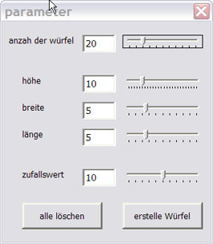

 |
|
Parameter können
über ein Eingabefeld an das Programmodul übergebe werden.
Grundlegende Technik zur Erstellung von Userinterfaces.
|
|
| Dim
hoch As Double, breit As Double, lang As Double, menge As Double,
zufall As Double Dim i As Integer Private Sub UserForm_Initialize() Private Sub createButton_Click() Private Sub deleteButton_Click() '-----------Anzahl--------------------------------- Private Sub SliderAnzahl_Scroll() Private Sub TFanzahl_Change() '-----------Höhe-------------------------------- Private Sub SliderHoehe_Scroll() Private Sub TFhoehe_Change() '-----------Breite--------------------------------- Private Sub SliderBreite_Scroll() Private Sub TFbreite_Change() '-----------Länge--------------------------------- Private Sub SliderLaenge_Scroll() Private Sub TFlaenge_Change() '-----------Zufall--------------------------------- Private Sub SliderZufall_Scroll() Private Sub TFzufall_Change()
|
|
\\ Entwurfsforschung \ Strukturexperimente \ autoCAD_VBA experimente